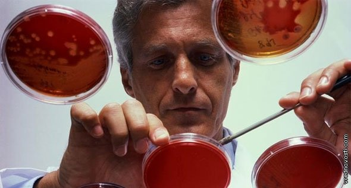

Визначання
Рак крові (лейкемія, лейкоз) - велика група злоякісних захворювань кровотворення клональної природи, які розвиваються внаслідок мутації клітин кісткового мозку з подальшим витісненням ними здорових тканин. Із-за дефіциту здорових клітин кровотворення з'являються наступні типові ознаки раку крові: підвищена схильність організму до різних інфекційних захворювань та крововиливів, анемія, цитопенія (зменшення тромбоцитів і лейкоцитів). Як і при інших онкологічних захворюваннях, пухлинні клітини раку крові здатні поширюватися в організмі людини, вражаючи різні органи і лімфатичні вузли. Найбільш часто на пізніх стадіях цього злоякісного процесу вражається печінка і селезінка, а тільки потім інші органи. У разі діагностування внекостномозговой периферичної форми раку крові спочатку метастази вражають кістковий мозок. Мабуть основною причиною мутації кровотворних клітин є канцерогенний вплив іонізуючої радіації, що підтверджується масовим масовим виявленням раку крові у жителів Чорнобильської зони та післявоєнної Японії. Також до факторів, здатних викликати дане захворювання відносять вірусні і хімічні мутагени (цитостатики, бензол тощо). Крім цього до раку крові може призвести променева терапія, проведена при лікуванні лімфогранулематозу (онкологічне ураження лімфоїдної тканини

Рак крові-стадії
Для початкової стадії гострої форми раку крові характерні наступні прояви: загострення хронічних інфекцій, значне погіршення загального самопочуття, невеликі зміни показників складу крові (іноді може бути відсутнім). Розгорнута стадія раку крові характеризується яскраво вираженими змінами складу крові. Після проведеного лікування, розгорнута стадія переходить у термінальну стадію (повне пригнічення системи кровотворення), або настає період ремісії. Початкова стадія хронічної форми раку крові характеризується абсолютною відсутністю зовнішніх симптомів і часто виявляється випадково при дослідженнях крові у зв'язку з іншими захворюваннями. На даній стадії раку крові в крові спостерігається підвищене число зернистих лейкоцитів. Для усунення надлишку застосовується лейкофорез. Друга стадія хронічної форми раку крові виявляється утворенням у хворого вторинних пухлин, поява яких супроводжується дуже швидким збільшенням кількості бластних кровотворних клітин, що приводить до перетікання даного онкологічного процесу в найважчу стадію з ускладненнями у вигляді значного збільшення селезінки, печінки і генералізованого ураження лімфатичних вузлів
Діагностика
У разі якщо хворий звертається зі скаргами на погіршення загального самопочуття, зі збільшеною селезінкою, печінкою та лімфатичними вузлами, його направляють для складання розгорнутого і загальних аналізів крові. До гематологічних симптомів раку крові відносять: виявлені в крові незрілі бластні клітини, а також знижений рівень гемоглобіну, тромбоцитів і лейкоцитів. Форма раку крові залежить від типу виділених видозмінених кровотворних клітин. Її встановлюють на останньому діагностичному етапі, який полягає у проведенні біопсії кісткового мозку. Для з'ясування ступеня метастатичного поширення раку крові показане проведення КТ черевної порожнини, голови та рентген грудної клітки
Рак крові - симптоми
Як і у більшості інших онкологічних процесів, на початкових стадіях рак крові протікає практично безсимптомно. До ранньої симптоматики даного злоякісного захворювання відносять такі соматичні ознаки: погане загоєння ран, погіршення пам'яті (внаслідок поганого кровопостачання мозку), сонливість або безсоння, швидка втомлюваність. Зовнішній вигляд пацієнта з раком крові відрізняється підвищеної блідістю, під очима яскраво виражені тіні. Хворі постійно страждають від різних інфекційних захворювань і носових кровотеч. Дуже часто спостерігаються такі симптоми раку крові: збільшення селезінки, печінки, лімфатичних вузлів; субфебрильна температура тіла. Гематологічні ознаки раку крові встановлюють, грунтуючись на результатах лабораторних аналізів крові пацієнта
Лікування
Основним методом лікування раку крові є хіміотерапія цитостатичними препаратами, тривалістю близько двох років (6 місяців стаціонару + 1.5 року амбулаторного лікування). Початковий етап лікування раку крові є найбільш важким періодом терапії для пацієнта, так як протягом перших тижнів хворому показане проведення безперервних внутрішньовенних вливань. У період розпаду пухлини медикаментозне лікування раку крові полягає в заповненні донорською кров'ю еритроцитів і тромбоцитів. Протягом усього періоду стаціонарного лікування необхідно суворо дотримуватися санітарний режим і максимально захищає пацієнта від будь-яких контактів із зовнішнім світом, так як внаслідок масового руйнування лейкоцитів у хворого практично повністю відсутня імунна захист. Після настання періоду ремісії все подальше лікування полягає в закріпленні досягнутого позитивного результату. У деяких випадках після декількох тижнів ремісії пацієнта з раком крові показане проведення курсу променевої терапії області головного мозку. У разі рецидиву захворювання пацієнт може бути направлений на пересадку кісткового мозку. Оптимальним для даної процедури донором може бути як родич, так і сумісний з крові стороння людина